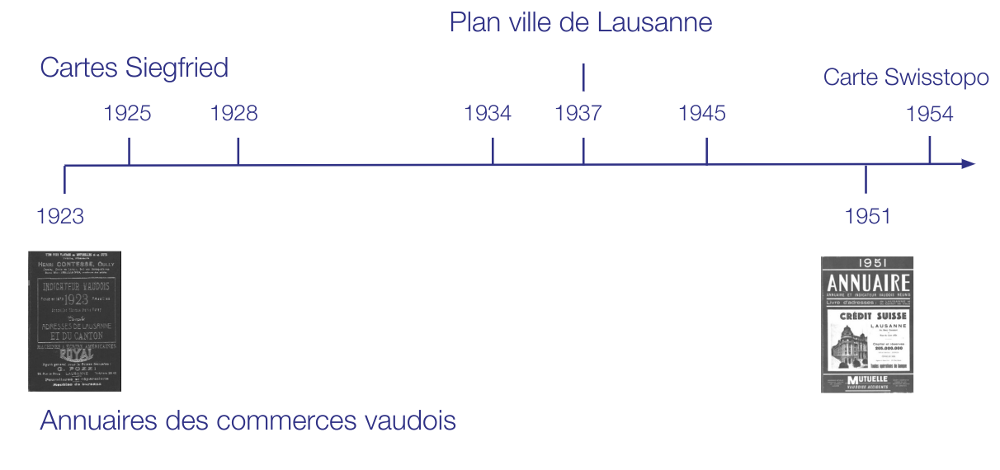
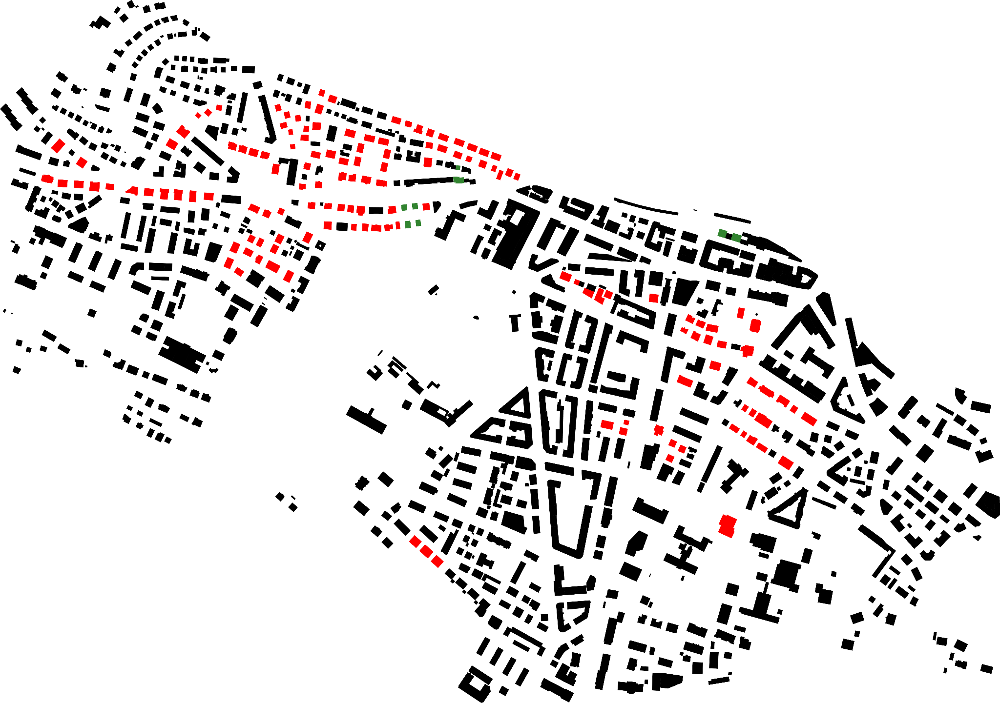
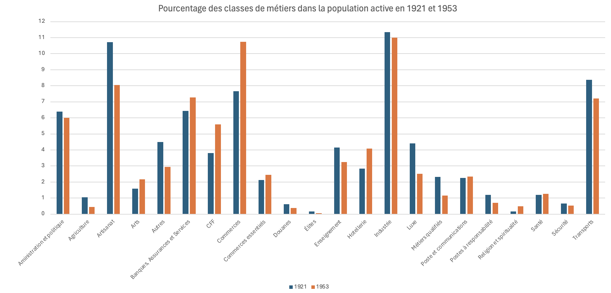

---
# Feel free to add content and custom Front Matter to this file.
# To modify the layout, see https://jekyllrb.com/docs/themes/#overriding-theme-defaults
layout: default
---
Abstract
Le quartier sous-gare a connu un développement rapide depuis la fin du 19ᵉ siècle, causé notamment par le développement des transports publics (ligne de tram, trafic en gare de Lausanne) et le développement d’une société locative (voir type du plot lausannois) Cela a permis le développement des loisirs pour une classe moyenne supérieure, avec un accès facilité au lac.
Ce projet vise à décrire et expliquer ce développement à l'aide d'informations d'époque et d'outils numériques.
Carte interactive
Cet outil permet de visualiser la distribution de la population répertoriée dans les annuaires vaudois de 1923 et 1951. Un filtrage par rue et métiers/catégories de métiers est également disponible.
Analyse
Plot Lausannois
Un plot (ou villa urbaine) est un immeuble d’habitation haut de trois
à cinq niveaux, implanté en ordre non contigu ou orienté sur quatre côtés, comportant
un ou deux logements par étage réunis autour d’une cage d’escalier collective et
favorisant, par l’ensemble de ses dispositifs architecturaux, le sentiment
d’individualité.
Bibliographie
CHALLAND, Didier, Habiter la ville ouverte. Nouvelle actualité de la villa urbaine, Annexes 1-2-3, Thèse de doctorat, École Polytechnique Fédérale de Lausanne, 2009.
RICKLI, Jean-Daniel, « Lausanne : deux siècles de devenir urbain », Habitation : revue trimestrielle de la section romande de l’Association Suisse pour l’Habitat, Vol. 51, no 12, 1978.
TRUAN, José Louis, Influences des modèles urbains sur l’urbanisme lausannois, Thèse de doctorat, École Polytechnique Fédérale de Lausanne, 1981.
RUI FILIPE PINTO, Benoît, Villa urbaine L'exemple lausannois
PITTELOUP, Antoinette, “Lausanne - Un lieu, un bourg, une ville”, 2001
Sources

Figure 1: Sources utilisées
Méthodologie et traitement des données
Les annuaires vaudois numérisés, fournis par la Bibliothèque Cantonale Universitaire de Lausanne, ont d’abord été passés par un programme de reconnaissance optique de caractères.
Puis, une annotation semi-automatisée, effectuée à l’aide d’Inception, nous a permis de formater les données brutes en tableaux.
Chaque information a été catégorisée selon son type :
Nom
Prénom
Adresse
Métier
(éventuellement) Numéro de téléphone
Un premier filtrage n’a conservé que les personnes habitant dans une des 54 rues considérées.
Ensuite, à cause des problèmes de numérisation, d’OCR, et d’incohérences dans la nomenclature des rues et des métiers, nous avons dû manuellement créer 203 et 208 « métiers-types », respectivement pour 1923 et 1951, afin d’obtenir des catégories comparables.
Exemples de métiers-types :
Tailleur
Brodeuse
Comptable
La liste complète des métiers-types est trouvable sur le dépôt Git, en-haut de la page.
Enfin, nous avons regroupé ces métiers-types en 23 « macro-catégories » que voici :
Administration et politique
Agriculture
Artisanat
Arts
Banques, Assurances et Services
CFF
Commerces
Commerces essentiels
Douanes
Élites
Enseignement
Hôtellerie
Industrie
Luxe
Métiers qualifiés
Poste et Communications
Postes à Responsabilités
Religion
Santé
Sécurité
Transports
Ces macro-catégories présentent quelques chevauchement, et certaines sont des sous-ensembles. Par exemple, la catégorie « CFF » est un sous-ensemble de « Transports ».
Résultat du traitement de données
Pour 1923, nous avons traité 2824 entrées, pour 1826 personnes avec métiers identifiés (64.6%).
Pour 1951, nous avons 6526 entrées, pour 4201 personnes avec métiers identifiés (64.3%).
La précision similaire de ces deux analyses semble toutefois être une coïncidence.
Construction de la carte
Le plan de Lausanne de 1937, fourni par le guichet géographique de la ville a été réaligné sur la carte actuelle, puis s’est vu adjoindre des références numériques aux rues et aux numéros de rue.
Ce processus nous a permis d’obtenir une carte d’apparence historique, sur laquelle il est possible de localiser exactement n’importe quelle adresse, comme vous avez pu le découvrir ci-dessus.
Résultats
Deux zones densément peuplées sont visibles: La zone vers Edouard Dapples - Rond-point et le croisement vers l'Avenue de Cour et de la Harpe. En regardant les données de 1951, nous voyons que la zone urbanisée s'est étendue plutôt vers l'ouest. Le Petit-Ouchy (Est) est peu peuplé et est encore composé principalement de domaines privés et publics (actuels Parc du Denatou, Olympique, Élysée), alors que la campagne de Bellerive (Ouest) acquise par la Commune de Lausanne en 1921 s'est développé avec la plage puis des bains publics en 1937, puis une plus grande offre de divertissements et une urbanisation.
On constate aussi ces zones sur la carte suivante qui offre un aperçu de la construction des plots entre 1923 et 1951 :

Figure 2: vert - plots construits avant 1923 - rouge - plots construits avant 1954 mais après 1923
Urbanisation de la Campagne des Cèdres
L’État de Vaud a acquis une partie du domaine et des maisons en 1942 pour y transférer l’école d’ingénieurs (désormais occupés par la HEP). En 1953, les anciennes maisons individuelles ont été démolies pour construire le siège de la Mutuelle Vaudoise (actuelle Vaudoise Assurances).
Curiosités
Roger de Cérenville, Consul honoraire de Belgique en 1923
Son frère Roger exerça la diplomatie et fut consul honoraire de Belgique à Lausanne. Comme d'autres Cérenville, il s'occupa d'institutions de bienfaisance. Ainsi vint-il en aide aux réfugiés belges et russes de la Première Guerre mondiale. Il fut aussi l'animateur bienveillant et le mécène apprécié de sociétés culturelles lausannoises, contribuant à façonner l'image de marque de sa famille.
Francesco Guiso, Consul d’Italie et Giovanni Marueci-Krings, vice-Consul en 1923
Norbert Bosset, ancien Conseiller d’État Vaudois et ancien président du Conseil des États, en 1951
Henri Haaker-Woog, Consul du Pérou en 1951
Évolution démographique
La population totale de Lausanne a crû de 68 500 habitants en 1920, à 107 000 habitants en 1950 (+55%). La population (active)du quartier sous-gare (mesuré à l'aide des entrées dans les annuaires) à quant à elle crû de 2582 habitants en 1923 à 5658 habitants en 1953 (+120%). Le quartier-sous gare a donc crû plus rapidement que Lausanne dans son ensemble. Le centre de gravité de la ville se déplace vers le Sud, avec l'axe gare - Ouchy comme colonne vertébrale.
Évolution urbaine
Avec l'extension de la ville, plusieurs nouvelles rues apparaissent :
Chemin des Bruyères
Chemin de Beau-Rivage
Chemin de Belle-Source
Avenue Henry Warnery
Chemin des Mouettes
Évolution des métiers

Figure 3 : Évolution des métiers entre 1923 et 1951
Comme visible sur la Figure 3, la distribution des métiers selon les macroclasses est remarquablement constante. Néanmoins, nous voyons quand même certains variations notables:
Une inversion des proportions entre artisanat (diminution) et commerces
Une augmentation du nombre d’employés du secteur tertiaire
Une diminution du secteur primaire, mais déjà peu représenté en 1923
Un secondaire stable
Ménagère : 95 → 54 entre 1923 et 1951 (-111%)
Commis : 31 → 1
Cocher : 6 → 1
Tailleur : 29 → 6 (-383%)
Employé du tramway (fermeture en 1964) 10 → 0
Téléphoniste : 0 → 14
Représentant : 56 → 224 (+75%)
Étudiant : 15 → 84 (+82%)
Vendeur : 6 → 115 (+94%)
Nous remarquons aussi que les descriptions des métiers sont plus précises et diverses. (e.g. commis devient employé de commerce). La disparition de "ménagère" est intéressante mais difficile à expliquer.
Certains métiers disparaissent (cocher, tramway) alors que d'autres apparaissent (téléphoniste). Grâce au développement du train, la macro-catégorie CFF triple de taille (98 -> 317).
Ouvertures
À notre surprise, la zone étudiée fait preuve d’une assez grande hétérogénéité dans les métiers, éducation et secteurs économiques représentés. Le Consul Honoraire d’Italie habite dans une immeuble de 15 personnes exerçant des métiers d’artisanat ou de service.
Cette diversité est présente partout dans la zone d’étude. Ceci dit, on notera l’absence des élites et détenteurs du pouvoir, ainsi que des classes défavorisées. Ce manquement est en partie dû au biais implicite des annuaires ; certaines personnes sont plus représentées que d’autres, de par leur métier ou leur classe sociale, et il ne peut se substituer à un véritable recensement.
À cette note, il pourrait être intéressant de comparer ce quartier nouveau, ainsi que son évolution, à celle du centre-ville de Lausanne, secteur de la Cathédrale, siège historique du pouvoir.
Une autre observation effectuée, somme toute assez évidente, est l’apparition progressive de numéros de téléphone dans l’annuaire. Ils sont rares en 1923, mais ils se démocratisent déjà en 1951.
Il serait intéressant d’étudier la pénétration du téléphone dans les foyers et entreprises Lausannois dans cette période, ainsi que d’identifier les premiers détenteurs d’un poste de téléphone. S’agit-il de personnes fortunées, ou de corps de métier spécifiques ?
En conclusion
La zone au sud de la gare, particulièrement à l’Ouest du parc de Milan, passe de campagne et lieux de villégiature pour bourgeois à un véritable quartier urbanisé.
La majorité des corps de métier y est représentée, l’industrie et les services s’y développent.
Les rives du Lac sont désormais plus accessibles, et le Léman commence à devenir partie intégrante de Lausanne, comme on le connait aujourd'hui.